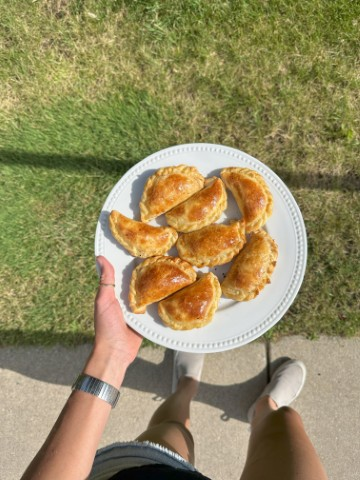

Mirta’s Crust
This is a key crust to learn for making pies, tarts, and empanadas. It
can be flaky if folded enough, and it tastes great.
Ingredients
-
2 cups all-purpose flour (whole wheat can be used, but it won’t be as
flaky)
-
1/4 cup oil (any vegetable oil works, recommended: sunflower oil)
- 1/2 cup boiling water
- Some cornstarch for rolling the dough
- Salt
Procedure
- Combine the flour, oil, water, and salt to form a dough.
- Roll the dough using cornstarch instead of flour.
- Roll and fold the dough multiple times to make it flakier.
-
Use a metal pan for baking. Bake at high heat if necessary, depending
on the intended use.